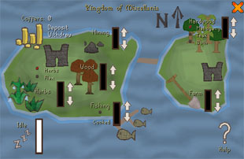

Managing Miscellania
Introduction

Requirements
You need to have completed Throne of Miscellania to become regent and control the Kingdom, having the following as your subjects:
- Miner
- Lumberjack
- Gardener
- Fisherman
On completion of Royal Trouble, you also have the following added to the above list:
- Carpenter
- Farmer
If you are helping out (gaining approval ratings) you will need the following:
- Level 30 Mining and a pickaxe to help Miner Magnus.
- Level 45 Woodcutting and a hatchet to help Lumberjack Leif.
- Level 10 Farming and a rake to help Gardener Gunnhild.
- Level 40 Fishing and a lobster pot to help Fisherman Frodi.
- Level 35 Woodcutting and a hatchet to help the Etceterian carpenter. (Requires Royal Trouble)
- Level 10 Farming and a rake, a watering can or a bucket of compost to help the Etceterian farmer. (Requires Royal Trouble)
Controlling your Kingdom
![[image]](../../img/main/kbase/guides/kingdom/ghrim.gif) To begin managing your kingdom, you must first locate Advisor Ghrim. He is found in King Vargas's throne room in the Miscellanian palace.
To begin managing your kingdom, you must first locate Advisor Ghrim. He is found in King Vargas's throne room in the Miscellanian palace.
Aside from providing help, hints and tips on ruling the kingdom, you can speak with him and use the 'How is the Kingdom faring' option to find out how your subjects are doing.
Talking to Advisor Ghrim will also bring up your Kingdom control panel, outlined a little later in this guide.
Subjects and Approval ratings

This is where the approval rating all began, your subjects will work a lot harder and gain more resources if you have a high approval rating. Should your approval rating be very low/near 0, you will find that your subjects will not be gathering much at all.
Working with your subjects will help raise your approval rating. Your rating will decrease over time, so it is best to try and sustain it by visiting your subjects on a regular basis to obtain the best from them.
Don't forget that at any time you can pop back up to Advisor Ghrim and check your current approval rating.
Coffers and Payments

Please note Farming and hardwood are only included on this interface if Royal Trouble is complete.
Here you can see the coffers and the amount in it. If you have completed the Throne of Miscellania quest, you will find the maximum amount of money you can put into the coffers is 5 million coins. If you have completed Royal Trouble, the coffers' limit is increased to 7.5 million coins.
Your subjects are paid for working from the coffers. For their efforts, 1/10th (up to a maximum of 50k, or 75k if you have completed Royal Trouble) is removed from the coffers each day to pay for the labour. (So, if you had 5 million in the coffers, each day, 50k would be removed for wages, or 75k if you have completed Royal Trouble; if you had 300k in the coffers, only 30k would be removed.) The greater the amount paid out, the more eager your subjects are to work, and hence you can expect more resources to be offered. If the coffers contain no money, your subjects will have to focus their efforts on sustaining themselves, and hence will not gather your resources.
Focusing your subjects
You are the regent of this kingdom, so it is only right that you decide what you have your subjects do. As touched on above, you can speak to Advisor Ghrim to bring up the Kingdom control interface.
When you have this interface open, take note of the arrows next to each resource type. You can assign workers/subjects to the areas of your choice, and you can also decide how many you wish to put on that task. For example, you can have a lot of workers working to collect a lot of herbs and wood, or have it spread out so your workers are collecting a fair amount of everything.
This subject assignment is not fixed, so should you decide you want different resources, simply use the down arrow to remove subjects from one task so you can assign them to another.
Collecting your Resources
When you have got your approval rating where you want it to be, and have deposited some cash in the coffers and assigned your subjects work, you simply need to wait at least a day, then come back to Advisor Ghrim.
If you have no money in the kingdom's coffers, no subjects working on any resources, or it's been less than a day since the last update, Advisor Ghrim will tell you that your subjects haven't collected anything.
If your subjects have collected some resources, though, the resources are sent straight to your bank. Advisor Ghrim also gives you a list of what you've been given, so you can see what you have before you look in your bank.
If you don't have enough space in your bank to store everything you could get in a resource you have people working on (such as all possible seeds, or all possible herbs), he won't let you collect your resources. He'll give you a message telling you roughly what you don't have space for, such as seeds or herbs.
Once Advisor Ghrim has had your resources delivered, or if there were no resources to collect, he lets you change what your subjects will collect next time, and add money to the coffers (or take money out).

More articles in
Miscellaneous Guides
|
|
|
Further Help
Need more help? Come chat with us!
|
|